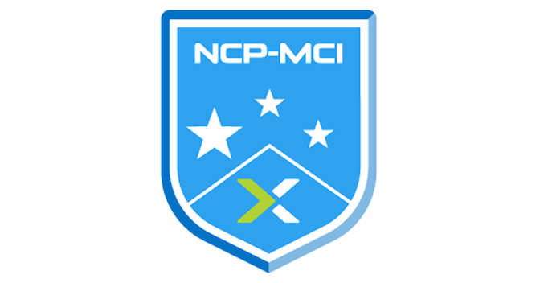
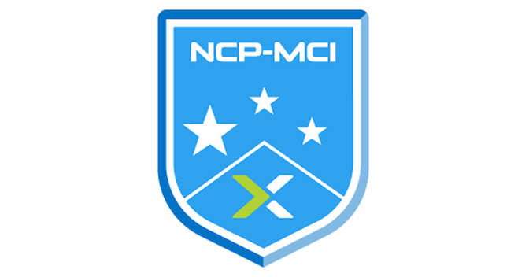

Senior Systems Reliability Engineer
Nutanix
Systems Reliability for Nutanix Enterprise Cloud and HCI
July 2021 - Present
Senior Site Reliability Engineer
GE Digital
AWS Cloud Operations for GE Public Cloud Offering Predix
EC2, S3, EMR, RDS, VPC, Cloudfront, Lambda ownership and administration
SME for Predix Container Service with Docker and Kubernetes orchestration
Assist customers with legacy application migration to AWS and Kubernetes
Maintain production ELK Clusters with Observability metrics through Kibana
In depth expertise with infrastructure as code using Terraform, Cloudformation
Monitoring platforms : Sensu, NewRelic, AppDynamics, Splunk, Prometheus
Customer facing incident management using ServiceNow, Salesforce and JIRA
Oncall rotation and working on P0/P1 incidents, outage flows and drive root cause analysis
Jan 2016 - July 2021
Big Data Engineer
ASK.COM
Responsible for implementing high availability for production grade hadoop clusters.Install and configure advanced monitoring capabilites using Nagios and Sensu. Build custom hadoop clusters for development teams with specific stack components like Hive, Sqoop, Oozie and Flume. Improve security for production systems with LDAP integration and Sentry for Apache Hive.
Upgraded the organizations production Hadoop clusters from CDH 4.7 to CDH 5.0.0
June 2015 - Jan 2016
Hadoop Administrator
Qualcomm
Architect, build and maintain development Hadoop clusters for windows mobile server data.
Strong expertise with monitoring and maintaining test execution over 150 linux servers, setup production hosts which
handle large scale automation
September 2013 - May 2015
System Engineer
Broadcom Corporation
Maintain hosted virtual instances running Android devices using Vsphere and ESXi hosts.
Handle developer requests and build custom installed software on ubuntu instances for BRCM test frameworks.
January 2013 - June 2013

 
